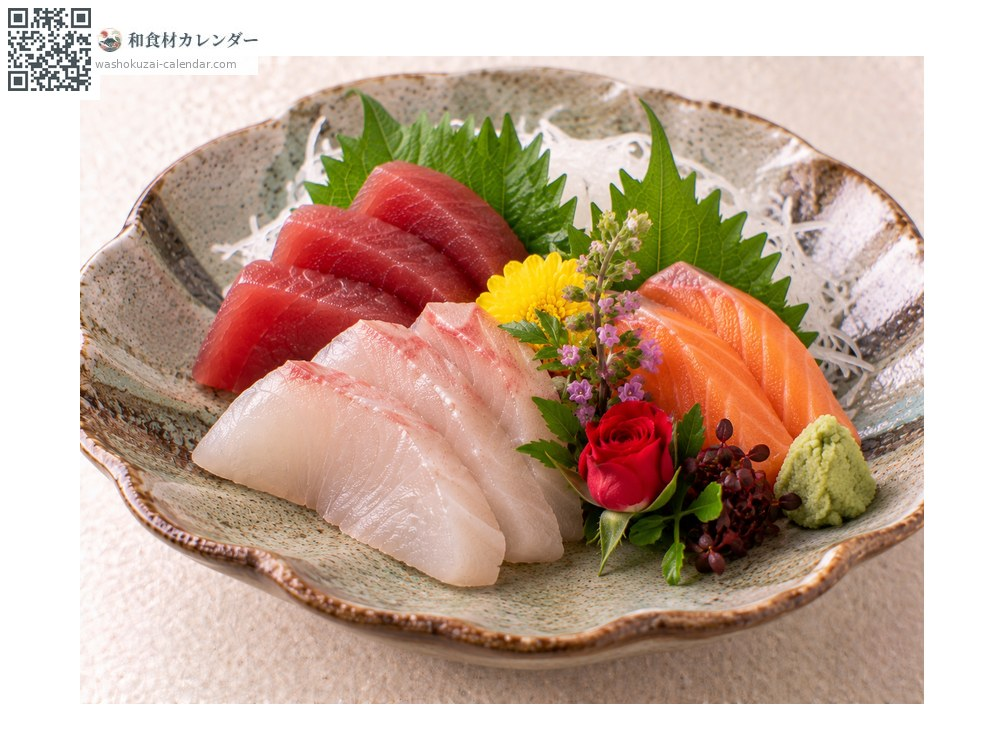
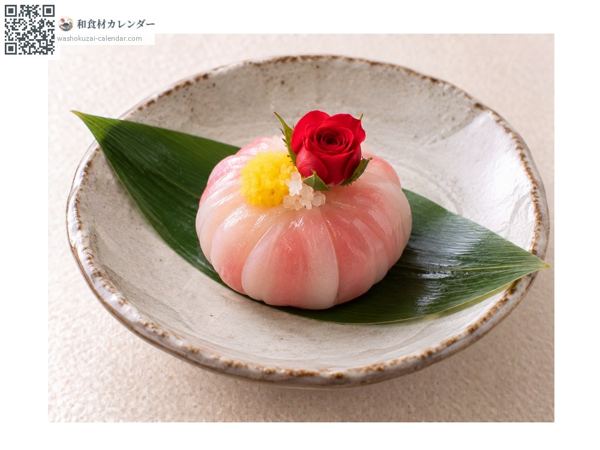
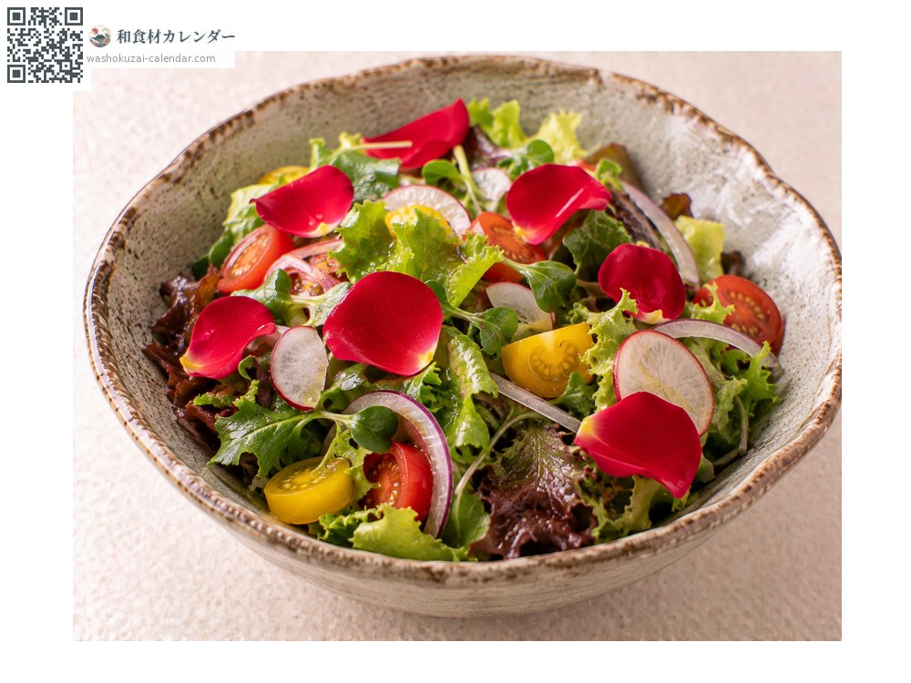

ผัก
กุหลาบจิ๋วกินได้ (เบลโรส)
ベルローズ べるろーず
ยังไม่ได้ระบุช่วงที่อร่อยที่สุด

ช่วงที่อร่อยที่สุด
ม.ค.
ก.พ.
มี.ค.
เม.ย.
พ.ค.
มิ.ย.
ก.ค.
ส.ค.
ก.ย.
ต.ค.
พ.ย.
ธ.ค.
ช่วงอร่อยที่สุดมีจำหน่าย
วิธีปรุง

ตกแต่ง
วางหนึ่งดอกข้างซาชิมิหรือในสำรับฮัสสึน สีแดงช่วยรวมจานให้ดูคม

ตกแต่งของหวาน
วางบนเค้กหรือขนมญี่ปุ่น ส่วนใหญ่ใช้ตอนยังเป็นดอกตูม

สลัด
แยกกลีบออกแล้วโรย ทิ้งกลิ่นหอมบาง ๆ ไว้
วิธีเลือก
ดอกตูมแน่นและแข็ง สีแดงสดใส ขอบกลีบไม่ช้ำ
วิธีเก็บรักษา
แช่เย็นทั้งแพ็ก ไม่ทนความแห้งและความร้อน ใช้ภายใน 2-3 วัน
แหล่งผลิตหลัก
เกร็ดน่ารู้
เป็นแบรนด์กุหลาบจิ๋วกินได้ที่ปลูกในโรงเรือนที่โทโยฮาชิ จังหวัดไอจิ ปลูกโดยลดการใช้สารเคมีเพื่อให้กินได้ ส่งออกตอนเป็นดอกตูมและบรรจุแพ็กดอกละช่อง กินได้ แต่หน้าที่หลักคือเพิ่มความงามให้จาน
วัตถุดิบที่อร่อยที่สุดในช่วงเดียวกัน
 ต้นอ่อนต้นหอมญี่ปุ่น
ต้นอ่อนต้นหอมญี่ปุ่น ต้นอ่อนผักไผ่แดง
ต้นอ่อนผักไผ่แดง ต้นอ่อนหัวไชเท้า
ต้นอ่อนหัวไชเท้า ผักโบฟุ (ก้านแดง)
ผักโบฟุ (ก้านแดง) ดอกเบญจมาศกินได้
ดอกเบญจมาศกินได้ ดอกสแนปดรากอนกินได้
ดอกสแนปดรากอนกินได้ ไลโคโพเดียม (ใช้ตกแต่ง)
ไลโคโพเดียม (ใช้ตกแต่ง) ใบนันเท็น (ใช้ตกแต่ง)
ใบนันเท็น (ใช้ตกแต่ง)